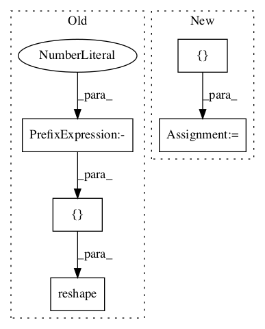

f360de0fa4454122d665b9c32f4d5911a4ebec0c,niftynet/layer/loss.py,LossFunction,layer_op,#LossFunction#Any#Any#Any#Any#,32
Before Change
**self._loss_func_params)
else:
list_prediction.append(
tf.reshape(prediction, [-1, self._num_classes]) )
if weight_map is not None:
weight_map = tf.reshape(weight_map, [-1])
After Change
if weight_map is not None:
weight_map = tf.reshape(weight_map, [-1])
data_loss = []
for pred in prediction:
if self._loss_func_params:
data_loss.append(self._data_loss_func(
pred, ground_truth, weight_map,In pattern: SUPERPATTERN
Frequency: 3
Non-data size: 5
Instances Project Name: NifTK/NiftyNet
Commit Name: f360de0fa4454122d665b9c32f4d5911a4ebec0c
Time:
Author: null
File Name: niftynet/layer/loss.py
Class Name: LossFunction
Method Name: layer_op
Project Name: deepmind/sonnet
Commit Name: e164c3574da160fb72fc962947a783fa299424e3
Time:
Author: null
File Name: sonnet/src/batch_apply.py
Class Name:
Method Name: merge_leading_dims
Project Name: wenwei202/iss-rnns
Commit Name: f9b98760f445fc0219cfc9c4cada2b5f9d35ab1b
Time:
Author: null
File Name: basic/model.py
Class Name: Model
Method Name: _build_loss